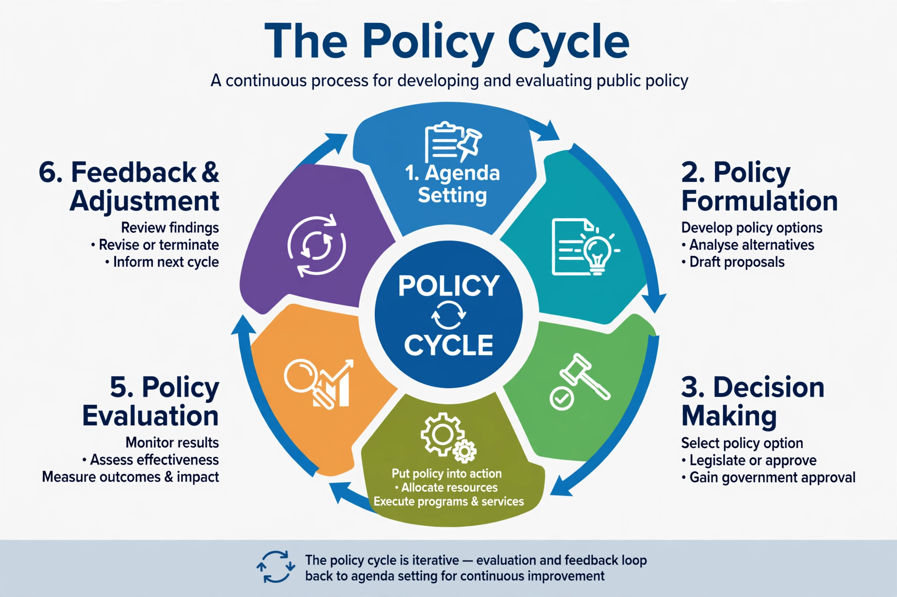

The policy cycle is a tool used for analysing the development of a policy item. It is also referred to as a 'stages model' or 'stages heuristic'. It was originally developed by political scientist Harold Lasswell and popularised in textbooks of public policy.

Common versions of the cycle comprise: (1) agenda setting — identifying problems requiring government attention; (2) policy formulation — proposing courses of action, often using tools such as cost–benefit analysis; (3) decision-making / adoption; (4) implementation; (5) evaluation; and sometimes (6) termination or succession, with evaluation feeding back into agenda setting.
Scholars such as Paul Sabatier criticised the stages heuristic for lacking causal mechanisms, assuming a single, tidy cycle, and underplaying politics and multiple actors; alternatives include the advocacy coalition framework, punctuated equilibrium theory and multiple streams framework (John Kingdon). Nonetheless the cycle remains a widely taught organising device, compatible with gradual change described under incrementalism.